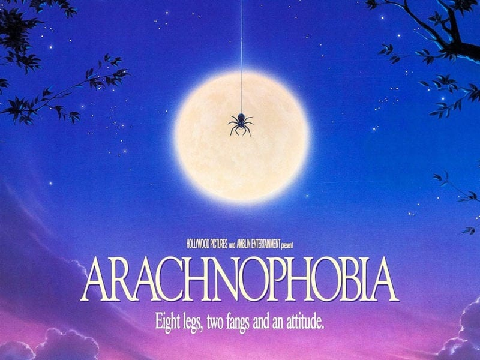
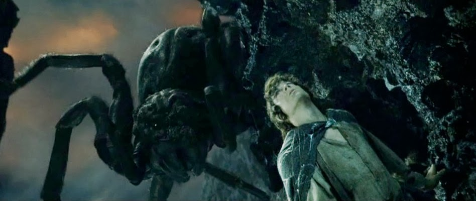
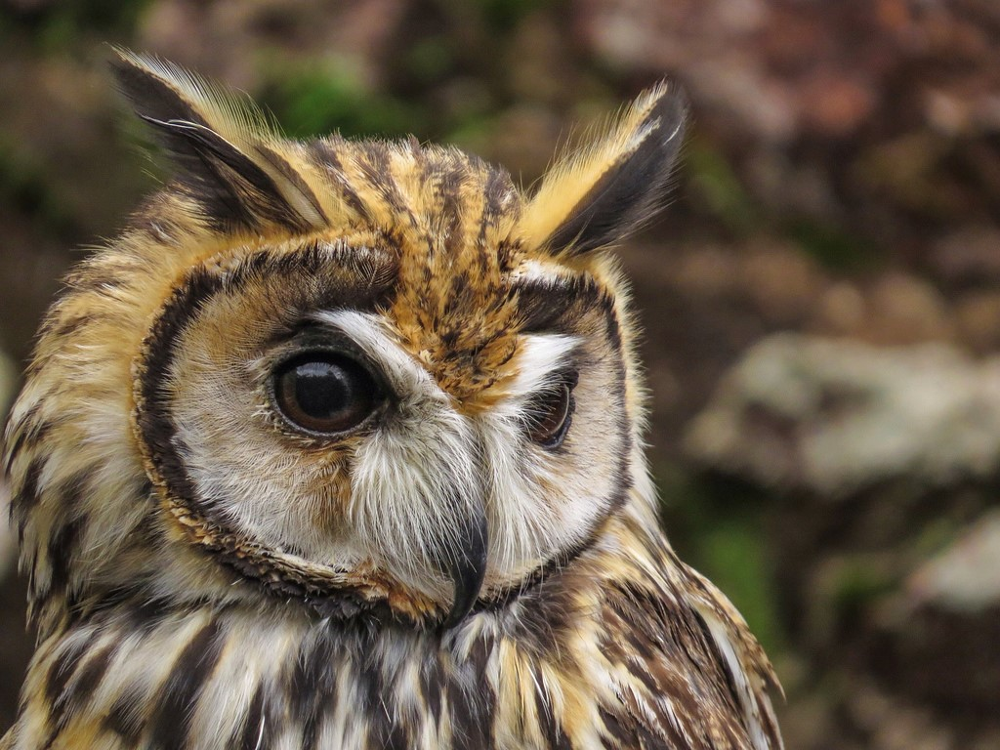

Rua 117, Cidade Nova - II, Manaus - AM, Brasil
Nascimento: 29 de Janeiro de 2002
WhatsApp/Mobile: +55 92 993110749
E-mail: josephpazjj@gmail.com
Discord: josephpaz (#2419)
Ainda em Formação.
English: (Baixo/Intermediário/Intermediário) - FMM
Portuguese: Native.
Porque quando criança assisti o filme Aracnofobia; onde houve um surto de aranhas assassinas numa cidade e o único que pode erradicar o surto é um médico que possui aracnofobia, desde aquele filme acabei pegando o medo. Outro exemplo é a aranha que aparece no Senhor dos Anéis e acaba lutando com o Frodo freneticamente até a morte.
 Não sei ao certo, mas talvez seja natural, ou acabei caindo de algum lugar muito alto quando criança e acabei esquecendo...
Quando fui para casa da minha tia, eu estava com uns 13 ou 14 anos, estava bricando com meus primos de papagaio, brincamos até a hora da minha tia nos chamarmos para almoçar, meu primos foram e eu também eu continuei brincando. Quando em um momento consegui cortar um papagaio alheio e deixei tudo para trás e fui atrás dele, e minha tia ainda me chamando para o almoço. Eu sai disparadamente, correndo freneticamente e com toda a felicidade do mundo, pois era uma explosão de adrenalina e felicidade ao ver o papagaio que cortei caindo lentamente não muito distante de mim. Eu estava correndo e olhando para o céu, focado no papagaio. Quando sem perceber um Chevette, verde-oliva, de placa OGM-1023 quase me atropelou, quando percebi o carro eu esquivei para o lado e o carro por sorte, muita sorte mesmo, não me atropelou, ele estava a uns 200km/h foi tudo muito rápido. Com esse desastre evitado eu fiquei alguns me perguntando o que acabara de acontecer, e por fim; um garoto mais ágil, sagaz e com o universo a seu favor acabou pegando o papagaio que eu cortei, para alegria dele e tristeza minha; Após o incidente fui cabisbaixo para casa da titia ir, finalmente, almoçar com minha tia e primos, sem saberem de nada do que tinha ocorrido; Eu guardei isso por um tempo e tarde mais contei à família o que aconteceu naquele dia.
Sim, desde pequeno sou fanático por corujas, penso em quando eu estiver morando só comprar uma, da espécie Pseudoscops clamator popularmente chamada de Coruja-Orelhuda.
O Homem-Aranha é um dos meus preferidos, gosto dele por causa de humildade e a ligação dele com os avós que sempre cuidaram dele e mesmo após a morte do seu avô, tio ben, continuou lutando e seguindo em frente, e dele a frase: "Com grandes poderes vem grandes reposabilidades."
Não tenho algum sonho em específico, mas desejo muito e persevero bastante para trazer um bom futuro aos meus pais por quem sempre cuidaram de mim, a minha força de vontade para estudar principal são eles, sem meus pais eu não seria nada. Mas, meu desejo também é ajudar todos que tem dificuldade e aqueles que estão passando por tempos difícies, já que um dia senti na pele como é a preocupação e a amargura.
Desde pequeno eu jogava bastante ficava no meu nitendo por horas, jogando donk kong, mario bros, Spaceshooter, e minha disse que quando criança eu ficava mexendo no computador fuçando algumas coisas, quando não estava fazendo isso proavvelmente eu estava jogando um daqueles jogos clássicos que tem no windows como o chess titan (xadrez) e assim fui crecendo o gosto por computadores, mas nada tão especial mas afeição mesmo. Quando fui crescendo tomei gosto por matemática e acabei me identificando com a matéria e assim foi indo, até eu saber do processo da fundação para informática... Minha mãe me incentivou muito, juntamento meus irmãos e meu pai, e foi quando lembrei do passado e meu namoro que tinha com meu nitendo e o antigo computador. Mas eu ainda não tinha a noção de informática que tenho hoje, sinceramente é um campo que me interessa a cada dia, espero que esta paixão não cesse.